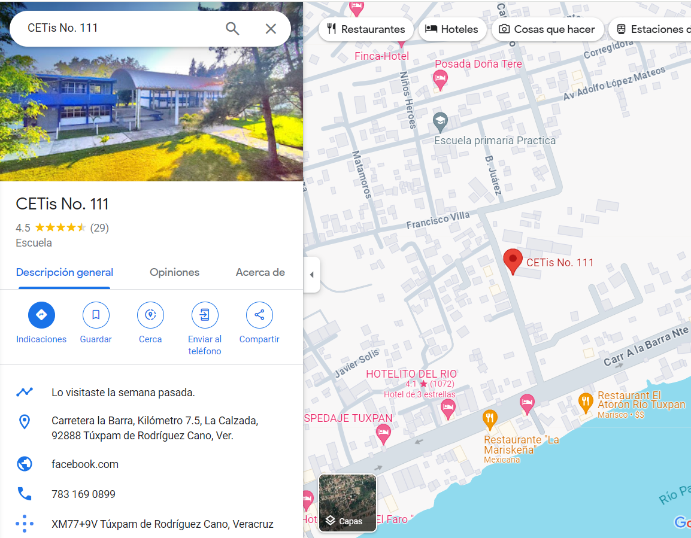
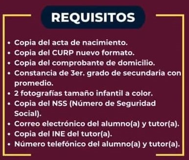

CETIS 111
El Centro de Estudios Tecnológico Industrial y de Servicios
Numero 111 fue fundado en el año de 1984...
Ubicación
La institucion educativa se encuentra en la siguiente dirección:
Carretera la Barra, Kilometro 7.5, La Calzada, 92888 Tuxpan de Rodríguez Cano, Veracruz

Link a Google Maps
Contacto
El número de contacto de la institución es el siguiente: +52 783 136 0899

Requisitos de inscripción

Canchas
Laboratorios de Computo
Laboratorio de Química
Carreras Técnicas
El Centro de Estudios Tecnológico Industrial y de Servicios Numero 111
ofrece la siguiente variedad de carreras técnicas:
Mecánica Industrial
Especialidad #1
Conocer masMantenimiento Industrial
Especialidad #2
Conocer masProgramación
Especialidad #3
Conocer masOfimática
Especialidad #4
Conocer masAdministración
de
Recursos Humanos
Especialidad #5
Conocer mas